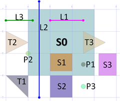

OGR Comes to SQL Server 2008 Spatial¶
- date:
2010-09-25 14:36
- author:
admin
- category:
geodatabases, sql server 2008
- tags:
gdal, sqlserver
- slug:
ogr-comes-to-sql-server-2008-spatial
- status:
published
 OGR, created by Frank Warmerdam, is an open source library and set of command line utilities for reading and writing geospatial vector data using many different formats ` <http://home.gdal.org/warmerda/>`__. It is the vector equivalent of GDAL which has similar functionality for rasters.
{kind=link}
The name of the library is a vestige from when OGR used to stand for OpenGIS Simple Features Reference Implementation. However as OGR is not fully compliant with the OpenGIS Simple Feature specification the name was changed to OGR Simple Features Library (from the GDAL FAQ).
The latest additions to the OGR formats are the SQL Server 2008 geometry and geography. This enables spatial data in SQL Server 2008 to be reprojected, and converted to other formats (shapefiles, MapInfo, KML, GML, GeoJSON and any of the many other formats already supported by OGR) using freely available open source tools. Details on the associated OGR tools can be seen here.
The full MSSQLSpatial OGR driver notes and details are **available online**.
Where can I get the Driver?¶
The source code for the new MSSQLSpatial driver can be seen here in the online GDAL subversion code repository. As can be seen by the check-in dates much of the work has been completed in the last two weeks.
The two developers who deserve the credit are Tamas Szekeres and Even Rouault, both members of the GDAL Project Management Committee. Tamas has blogged about the new OGR driver here. Tamas’s work is becoming invaluable to many of my projects ?” and he was also responsible for the MapServer SQL Server 2008 driver.
The MSSQLSpatial driver is not currently available in the latest version of FWTools (2.4.7 at the time of writing). FWTools (Frank Warmerdam tools) is an easy to install package containing both GDAL and OGR, but keep an eye on the http://fwtools.maptools.org/ site for new releases.
The driver was not a part of the GDAL 1.7 release, so if you can’t wait until the next binary (precompiled) release, you have to compile it yourself. However Tamas maintains a page which automatically compiles the latest MapServer source code into binaries at http://vbkto.dyndns.org/sdk/. MapServer includes the latest development GDAL and OGR binaries (gdal18dev.dll) which in turn include the new MSSQLSpatial driver. So this is currently the easiest place to get a compiled version for testing with SQL Server.
Quick Set Up of OGR & MSSQLSpatial (on Windows)¶
Even though at the time of writing the latest development builds for MapServer failed the GDAL/OGR DLLs and .exes seem fine and can be found in the bin/gdal subfolder of the MapServer packages. To quickly get up and running with OGR you can follow these steps:
1. Download a suitable package from http://vbkto.dyndns.org/sdk/. You will need a development release, or a release with GDAL 1.8 or higher. Click on the information links to see which OGR types are supported in a package.
2. Unzip the package to your machine. It is best to put the package in a folder which does not contain spaces.
3. Run the following commands in a Windows Command Line window. I left the package in my D:\My Documents\Downloads\ folder in this example.
D:
cd "D:\My Documents\Downloads\release-1500-gdal-mapserver\"
SDKShell.bat setenv hideoci
The SDKShell.bat file sets all the GDAL environment variables for your command window session. The hideoci parameter is used to move the Oracle driver plugin out of GDAL ?” otherwise if you try and run commands you get the following error (unless the Oracle client is installed on your machine):
This application has Failed to start because OCI.dll was not Found. Re-installing the application may fix this problem
The hideoci parameter did not work for me due to the spaces in my folder path, so I manually did what the .bat file was meant to do ?” move the ogr_OCI.dll, and gdal_GEOR.dll files out of bin\gdal\plugins\ and into a new bin\gdal\plugins-optional folder.
Once this was done I was able to run the following command to check the OGR formats:
ogrinfo.exe ?"-formats
- orphan:
Comments¶
1. Tere **
Bien una amigo que este1 en un curso de IDE por Francia, y que tiene un proyecto madnoto sobre Map Builder me comenta que sus instructores le han mencionado que MapBuilder continuare1 y que no ande creyendo al primer post que lea.Que suerte tengo para que me pillen ased de cualuqier forma, gracias por la aclaracif3n he hecho algunas correcciones al punto de vista original
ReplyAdd Comment